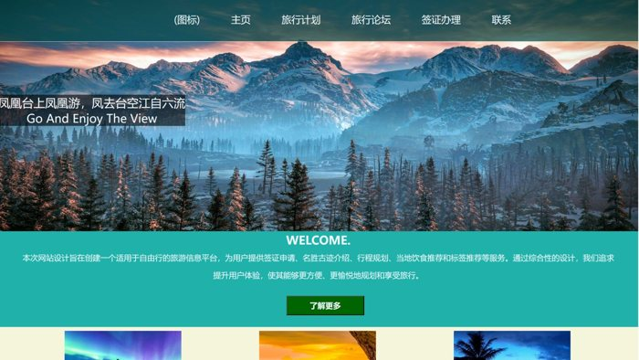

Travel Website旅行网站
HTML · CSS · JavaScript · Year 2 coursework.
Web implementation and UI/UX projects, with source or project notes. / 网页实现与界面设计。

HTML · CSS · JavaScript · Year 2 coursework.
React client, Axios and course-companion API integration.
Student and courier interface/service design.
View the full project walkthrough.
Vue interface, interactive previews and model workflows.